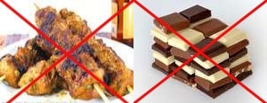

|

|
Кормление собак. Чем нельзя кормить собак?Советы владельцам собак.
Кормление собак.
Чем нельзя кормить собак?
Нельзя
кормить собак горячей, соленой, жирной, сладкой и копченой
пищей.
Собака не должна знать, что
такое
сосиски, колбаса, окорок. Нам известно немало владельцев, которые для своего любимца
способны сделать
невероятное и не постоят ни за какими расходами и трудностями. В данном случае все это
совершенно
напрасно. Колбасные изделия для собаки — яд. Они портят печень, и собака рискует
погибнуть уже в
молодом возрасте. Ведь нам неизвестно, какие добавки вводят в колбасы, чтобы они имели
привлекательный
вид.
Из питания собаки следует
исключить:
- Бульон, даже самый
диетический;
- Свинина — мясо свинины слишком жирное, что
создает большую
нагрузку на печень;
- Баранина — так же слишком жирна для
собаки;
- Сырая речная рыба — в большинстве случаев речная рыба
поражена личинками
гельминтов (глистов), рыбу необходимо варить и удалять все многочисленные
кости;
- Кости — вопреки укоренившемуся
заблуждению, кости для
собаки — гибель. Во-первых, они не усваиваются. Во-вторых, могут вызвать
запор, прободение
кишечника, заворот кишок. Особенно опасны трубчатые кости, которые имеют обыкновение
расщепляться на
острые части. Кости также способствуют быстрому стачиванию зубов;
- Макароны — не имеют никакой питательной
ценности, растягивают
желудок и провоцируют полноту;
- Горох, фасоль и прочие
бобовые — это еда не для собаки, она не
свинья, у собак
недостаточно хорошее выведение газов из кишечника;
- Грибы — могут содержать токсины, которые
наносят ущерб
печени и почкам;
- Виноград и изюм — виноград опасен неизвестным
веществом, которое
разрушает почки собаки;
- Шоколад — содержит теобромин —
сердечный стимулятор и
мочегонное средство, может быть фатальным для собаки;
- Картофельные очистки и зеленый
картофель —
содержат оксалат, способный затронуть пищеварительную, нервную, и мочевую
системы;
- Сахар и конфеты — сладости портят аппетит, нарушают
пищеварение,
разрушают зубы и крайне неблагоприятно влияют на глаза, которые начинают слезиться;
- Тесто на дрожжах — причина газов и вздутия живота,
ведущая к разрыву
пищеварительной системы и грыже;
- Брокколи — токсична в больших
количествах;
- Большинство фруктовых косточек и
семян — содержат цианогенный гликозид,
который приводит к
отравлению цианидом, хотя сами фрукты не вредны;
- Пряности — перец, лавровый лист, острый
томатный соус и,
особенно, мускатный орех, который может вызвать судороги и припадки, наносит ущерб
центральной нервной
системе;
- Кофе
и чай — опасны
из-за кофеина;
- Человеческие
витамины — особенно те, которые содержат
железо, наносят ущерб
печени и почкам;
- Лук
и чеснок —
содержат токсичный компонент — тиосульфат, лук более опасен, т.к. содержит
больше этого
токсина;
- Жирные молочные и молочнокислые
продукты —
создают большую нагрузку на печень, могут вызвать диарею;
- Любой алкоголь — способен привести к коме и даже
смерти;
- Соль — В большом количестве нарушает
водно-электролитный
баланс организма, что может привести к мышечным судорогам и спазмам, или даже
застойной сердечной
недостаточности;
- Некачественный, испорченный сухой
корм — сухой корм является очень хорошей
питательной
средой для микроорганизмов, которые с успехом в нем размножаются при нарушении
условий
хранения;
- Некачественные, испорченные
продукты — приводят к желудочно-кишечным
расстройствам,
являются причиной пищевых отравлений.
Обновлен 20 фев 2020.
Создан 24 авг
2011
|